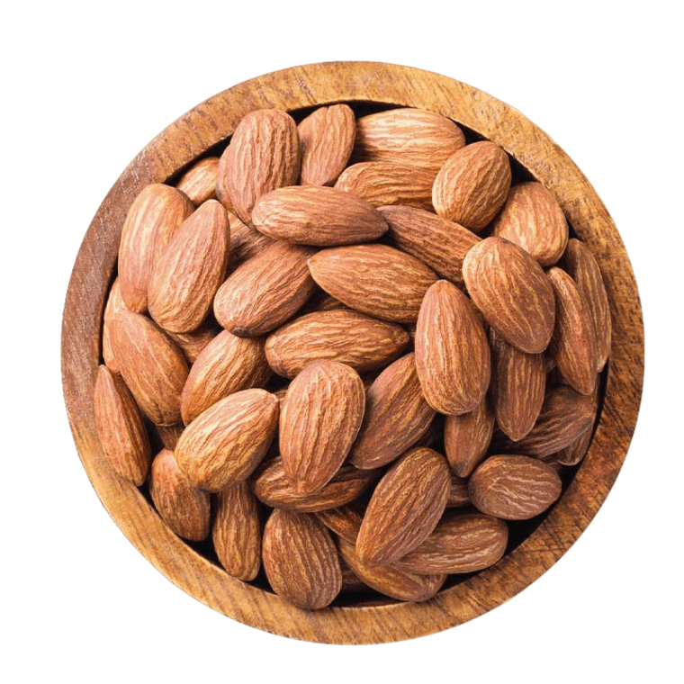

مكونات طبيعية
بالكامل.
الكستناء
✔ تتميز الكستناء بإحتوائها على العديد من العناصر الغذائية المفيدة جدًا مثل: البوتاسيوم والكالسيوم والعديد من الفيتامينات منها فيتامين ج وفيتامين ب وحمض الفوليك، وهي غنية بالمعادن المختلفة والدهون .
التوت
✔ تتميز الكستناء بإحتوائها على العديد من العناصر الغذائية المفيدة جدًا مثل: البوتاسيوم والكالسيوم والعديد من الفيتامينات منها فيتامين ج وفيتامين ب وحمض الفوليك، وهي غنية بالمعادن المختلفة والدهون الغير مشبعة والمفيدة، ممّا يجعل لها دور كبير في وقاية الجسم من العديد من المشاكل الصحية .
كركم
✔ يساهم في تحسين وظيفة الأوعية الدموية عن طريق تعزيز تدفق الدم وتوسيع الأوعية الدموية و خفض ضغط الدم و تحسين مستوى الكوليسترول .

الزنجبيل
✔ الزنجبيل يحتوي على مركبات مضادة للالتهابات ومضادة للأكسدة، وهذه المركبات قد تساعد في تحسين تدفق الدم وتقليل التورم. بالإضافة إلى ذلك، الزنجبيل يمكن أن يساهم في تحسين صحة الأوعية الدموية بشكل عام.
نبات الزعرور
✔
يساعد في تحسين وظائف القلب و تحسين مستوى الاكسجين في الجسم و وتقليل مخاطر ظهور الدوالي و يساعد في توسيع الأوردة .

اللوز
✔
اللوز غنية بالدهون الصحية مثل الدهون غير المشبعة والأحماض الدهنية أوميجا-3. هذه الدهون يمكن أن تساعد في زيادة مستويات الكوليسترول الجيد (HDL) في الدم، مما يقلل من تراكم الدهون في الأوعية الدموية ويحسن من صحتها.


 دانة
دانة
 رقية
رقية
 سارة
سارة